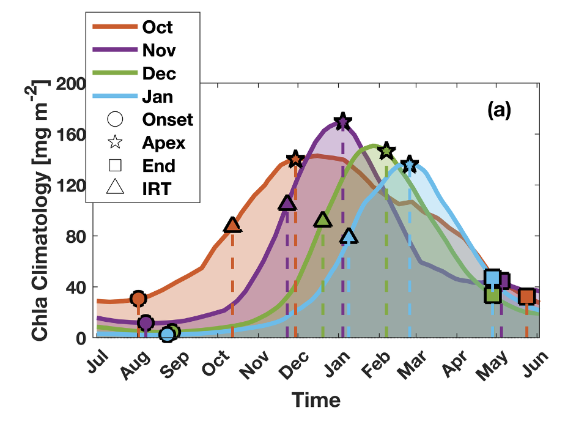

Antarctic Winter Water
I investigate how Antarctic Winter Water forms, evolves, and connects surface forcing, sea-ice variability, and subsurface carbon storage. My current work uses BGC-Argo observations and BSOSE to examine how recent Antarctic sea-ice decline affects Winter Water variability, DIC budgets, primary production, and air-sea CO2 exchange.
Image credit: Spira et al. (2024).

Carbon observations and air-sea CO2 exchange
I study how physical and biological processes regulate carbon uptake, storage, and air-sea CO2 exchange in the Southern Ocean. My work integrates BGC-Argo floats, moorings, ship-based observations, and satellites to quantify CO2 fluxes, primary productivity, and organic carbon export.
Paper: Yang, X., Wynn-Edwards, C. A., Strutton, P. G., & Shadwick, E. H. (2024). Drivers of air-sea CO2 flux in the subantarctic zone revealed by time series observations. Global Biogeochemical Cycles, 38, e2023GB007766.
Report: https://aappartnership.org.au/down-the-sink-following-carbon-in-the-southern-ocean/

Carbon export and biological pump
I investigate how biological production, particle export, and vertical transport regulate the efficiency of the biological carbon pump. Using BGC-Argo optical and oxygen-based observations, my work quantifies multiple POC export pathways, including the gravitational, mixed-layer, and eddy subduction pumps.
Paper: Yang, X., Wynn-Edwards, C.A., Strutton, P.G., and Shadwick, E.H. (2024). Carbon export in the subantarctic zone revealed by multi-year observations from biogeochemical-Argo floats and sediment traps. Global Biogeochemical Cycles.
Report: https://aappartnership.org.au/under-the-pump-robot-floats-probe-carbon-pathways-in-the-southern-ocean/

Phenology v.s. Antarctic Sea Ice changes
I examine how Antarctic sea-ice retreat influences biogeochemical variability in the seasonal sea-ice zone. My recent work uses machine-learning-enhanced BGC-Argo pCO2 estimates to assess how earlier sea-ice retreat affects phytoplankton phenology, primary production, and oceanic carbon uptake.

Physical drivers of Southern Ocean biogeochemical variability
I investigate how physical ocean processes, including fronts, mesoscale eddies, mixing, and water-mass variability, shape Southern Ocean biogeochemical patterns. My work links physical circulation and climate variability to changes in phytoplankton blooms, carbon cycling, and ecosystem responses.
Paper: https://agupubs.onlinelibrary.wiley.com/doi/10.1029/2021JC017863